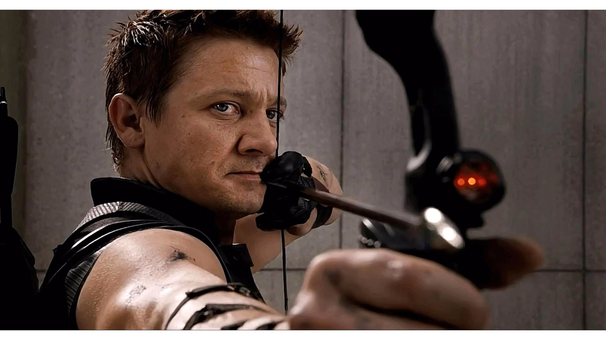

Hawk Eye
Birth and Early Life
Hawkeye (Clinton Francis "Clint" Barton) is a fictional superhero appearing in American comic books published by Marvel Comics. Created by writer Stan Lee and artist Don Heck, the character first appeared as a villain in Tales of Suspense #57 (Sept. 1964) and later joined the Avengers in The Avengers #16 (May 1965). He has been a prominent member of the team ever since. He was also ranked at #44 on IGN's Top 100 Comic Book Heroes list. Hawkeye is portrayed by Jeremy Renner in the Marvel Cinematic Universe, a shared fictional universe that is the setting of films produced by Marvel Studios. Renner first made an uncredited cameo appearance in Thor (2011) and later played a larger role in The Avengers (2012), Avengers: Age of Ultron (2015), Captain America: Civil War (2016) and Avengers: Endgame (2019).
Hawkeye was introduced as a reluctant villain in Tales of Suspense #57 (September 1964). After two more appearances as a villain in Tales of Suspense #60 and #64 (December 1964 and April 1965), Hawkeye joins the ranks of the Avengers in Avengers #16 (May 1965). He became a perennial member of the team and has made numerous appearances in all five volumes (Vol. 1 (1963–1996), Vol. 2 (1997), Vol. 3 (1999–2004), Vol. 4 (2010–2013), Vol. 5 (2013–present)), including specials and annuals, as well as in The Ultimates. However, Hawkeye's presence in the Avengers - both the team and the series - would be sporadic for nearly a decade starting in early 1973. Steve Englehart, the Avengers writer at the time of Hawkeye's departure, explained, "When I had Hawkeye quit the Avengers, I liked him, but I wanted to try a different approach, so his leaving fit in with what I was trying to do."
Hawkeye featured prominently in the limited series West Coast Avengers #1–4 (September 1984–December 1984) as founder and team leader, before appearing in the ongoing title, which ran for 102 issues (including eight annuals) from October 1985–January 1994. The title was renamed Avengers West Coast from #46 (Aug. 1989). Hawkeye also starred concurrently in almost every issue of Solo Avengers which ran for 40 issues from December 1987–January 1991 (the title was renamed Avengers Spotlight from #21, the August 1989 issue).
From 1998 to 2002, Hawkeye featured significantly as team leader in issues #20–75 and Annual #2000 of the title Thunderbolts, written by Kurt Busiek and Fabian Nicieza. He appeared as a supporting character in Avengers Academy from issue #21 (Jan 2012) through its final issue #39 (Jan 2013) and as team leader in Secret Avengers from issue #22 (Feb 2012) through its final issue, #37 (Feb 2013). Hawkeye appeared in Vol. 2 (2013) of Secret Avengers by Nick Spencer and Luke Ross. Hawkeye appeared as a regular character in the 2010-2013 Secret Avengers series, from issue #21.1 (March 2012) through its final issue #37 (March 2013).
Skills and abilities
While Hawkeye has no superhuman powers (with the exception of the period when using Pym particles to become Goliath), he is at the very peak of human conditioning. He is an exceptional fencer, acrobat and marksman, having been trained from childhood in the circus and by the criminals Trick Shot and Swordsman. This includes considerable strength, as a supervillain found out when he tried to use the superhero's 250 pounds-force (1,100 newtons) draw-weight bow and found that he could not draw back the string to launch an arrow.
Hawkeye has also been thoroughly trained by Captain America in tactics, martial arts, and hand-to-hand combat. Hawkeye excels in the use of ranged weapons, especially the bow and arrow, and carries a quiver containing a number of customized "trick arrows". In his role as Ronin, Barton shows great proficiency with the katana and other melee weapons. He has gained a reputation for being able to "turn any object into a weapon", and has been seen using items such as tin plates, coins, sticks and other debris to great effect against his enemies.
Hawkeye is also known to use a "Sky-Cycle" as his mode of transportation. The Sky-Cycle is modelled after a commercial snowmobile and is fitted with anti-gravitational technology. It is voice-operated and has an auto-pilot steering system. The original Sky-Cycle was custom made for Hawkeye by Jorge Latham while he was employed by Cross Technological Enterprises. Latham was later employed by the West Coast Avengers and built several more.
